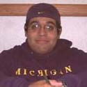

|
2000-2001 Group Liaisons!
|
|
2000-2001 Group Liaisons!
|
|
Sara Greenwood,
Academic Liaison Hobbies -
playing tennis, volleyball, watching movies |
|
|
|
Nicole Muscatelli,
Academic Liaison Hobbies -
reading, singing, acting, dancing |
|
Catherine Hardwick,
Community Service Liaison Hobbies -
Running, cooking, shopping, crafts, tailgating |
|
|
|
Timothy Michael
Jarrett, Cultural &
Minority Liaison Hobbies -
Computers, reading, writing, parties, etc. |
|
Sergio Navarette,
Cultural, Ethnic, Minority
and Religious Liaison Hobbies -
Video Games, reading, listening to music |
 |
|
|
Karen Bockli,
Health Organizations Liaison Hobbies -
Skiing, biking, running, shopping, horseback riding |
|
Sosun Bae,
Greek Life and Political/Social Liaison Hobbies -
Writing, sleeping, shopping (I can't help it), emailing, dropping in
on my friends, singing (not that I'm good) |
|
|
|
Heather Harlan,
Greek Life and Athletic Liaison Hobbies -
Waterskiing, making ceramic pots & working out at the gym |
|
Jodie Kaufman,
Performance/Arts & Media/Publications and Athletic Liaison
Hobbies -
Reading, writing, sports, watching movies, hanging with friends |
|
BookMARK
Coordinators
|
Comments about this webpage can be directed to smileweb@umich.edu
All other comments or questions can be sent to smile@umich.edu